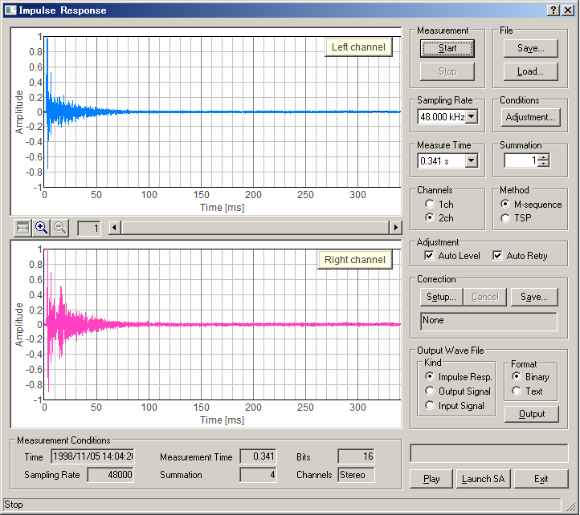

DSSF3 > RA > Impulse response > Measurement guide
Operation test
Select the Channels (1ch or 2ch) and Method (MLS or TSP), and click the Start button to start the measurement. Test signal is generated and the impulse response is measured automatically.
The example as shown in the figure below is the impulse response of the output signal itself, measured by selecting the input device as Wave. In this case, the signal is inputted without any external device. So the result should include only one pulse and elsewhere should be flat. Otherwise, the settings of the input device and the volume control might be wrong.

Click the Play button to listen to the measured response. By listening to it, the problem of the measurement which is not known only by seeing a waveform may become clear.
DSSF3 > RA > Impulse response > Measurement guide